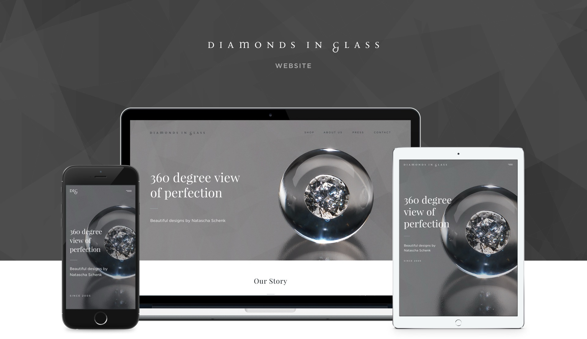
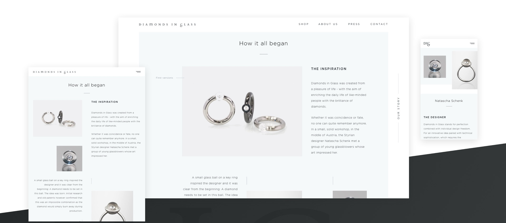
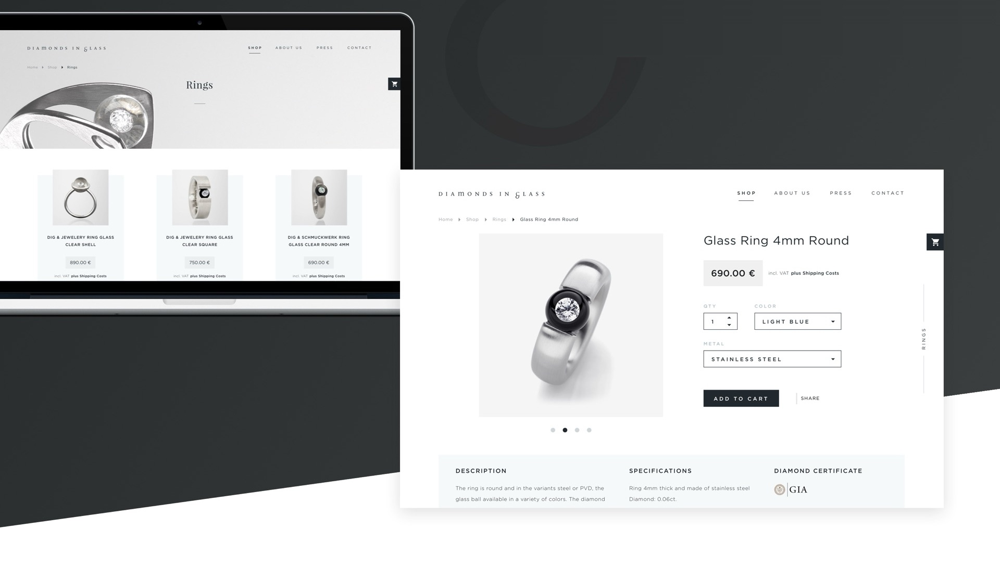
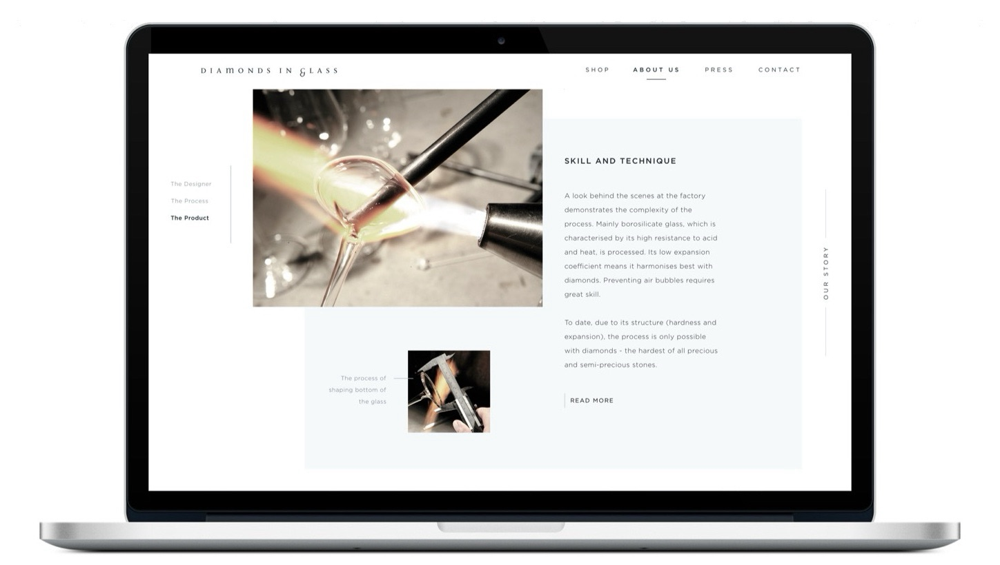
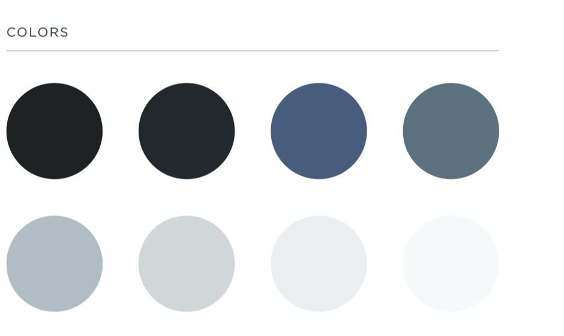
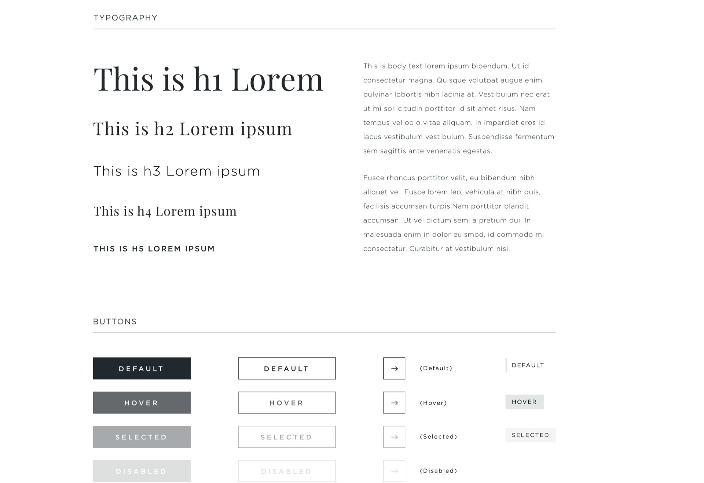
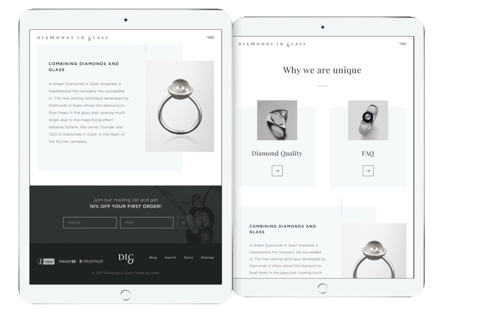
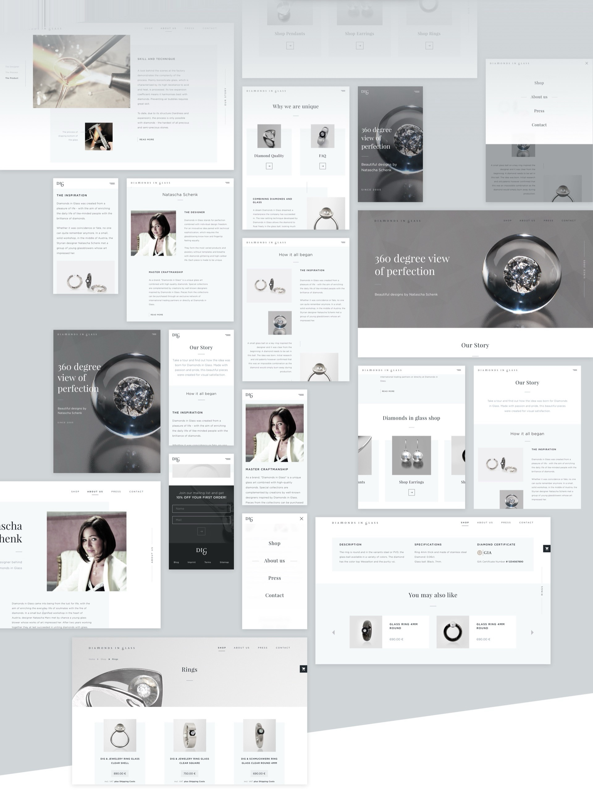
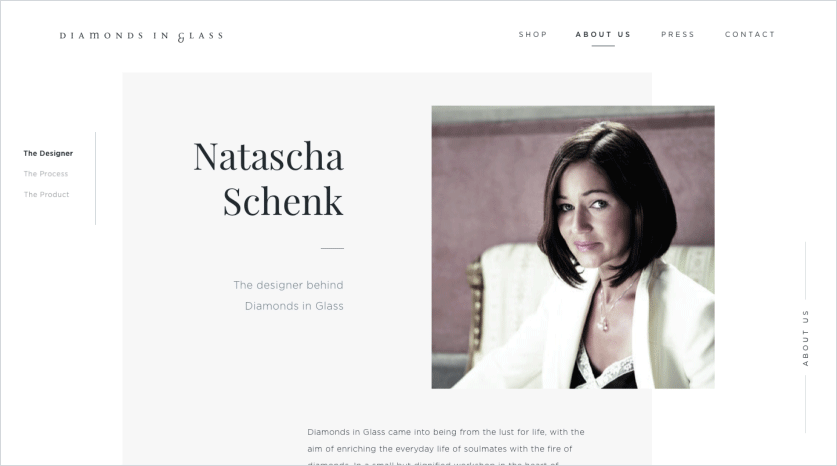
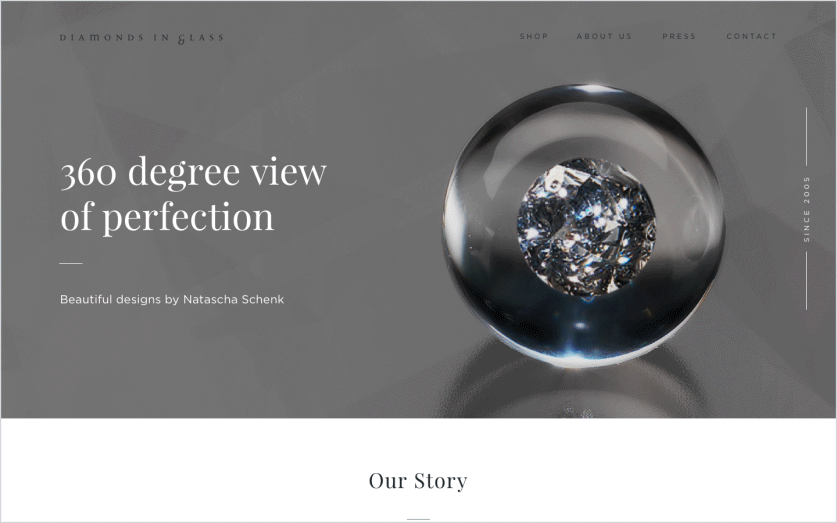

Diamonds in Glass — a 360° view of perfection. (2017)
A website and online shop for Diamonds in Glass — jewellery by Natascha Schenk — that tells the story behind each piece before leading into the shop.

Story
The new setting technique developed by Diamonds in Glass lets the diamond float freely inside a glass ball, where it looks much larger thanks to the magnifying effect.

Goal
Telling the story of Diamonds in Glass and their unique products helps people understand how different and original their approach to jewellery is.
By getting to know the “hows” and “whys”, people can move into the shop easily and choose from a large range of products.

Concept
It was important to follow the clean, elegant style of the brand. Industry and brand information, as well as the product overview, needed to be clean and easy to navigate while staying interesting and delightful.

Style
A cooler palette of toned-down, neutral colours brings a high level of elegance to the overall style.
Pairing clean body type with a high-contrast display face achieves a premium feel and helps tell the story of each product.


Layout design
Generous white space helps people take in the content and follow the brand’s elegant story.
Each product sits in its own section, so the focus stays on its design details without other elements getting in the way.


Experience
Interacting with the product matters not only for clear navigation but also for the delight a brand like this offers. It’s all part of telling the story and helping people feel the emotion and quality the brand stands for.
Gentle animations of layout elements enhance the experience, working together with white space, imagery and type.

